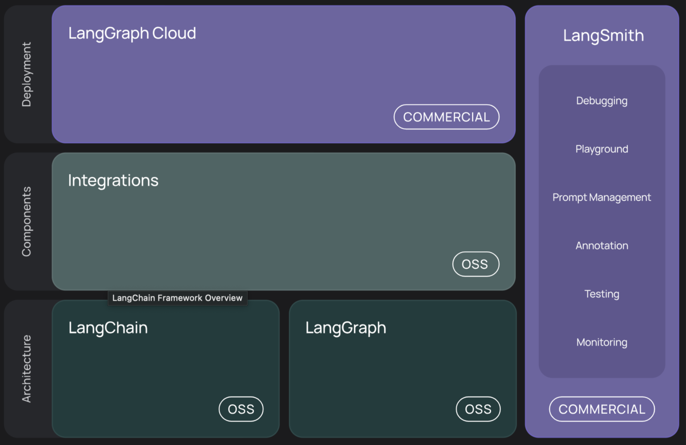
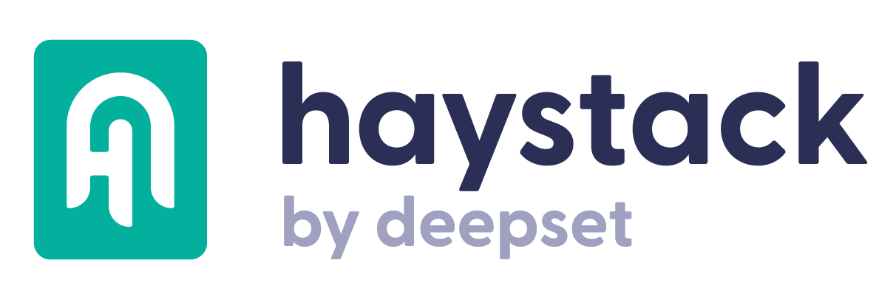
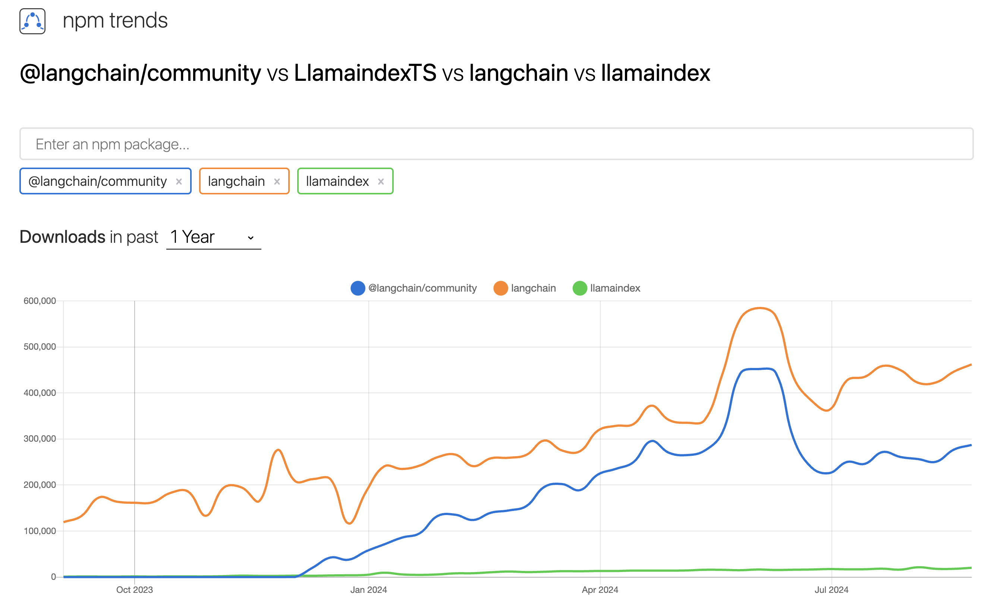
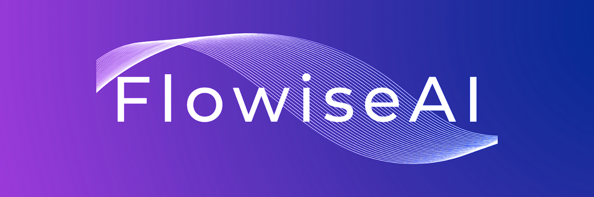
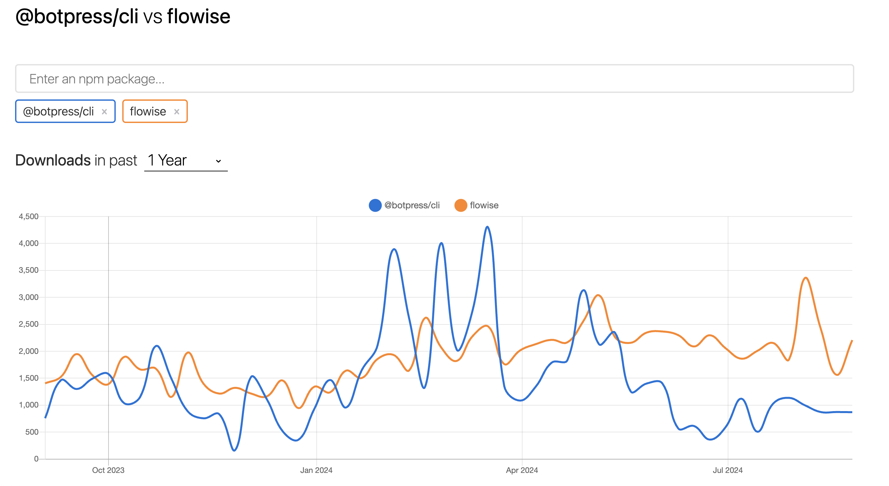
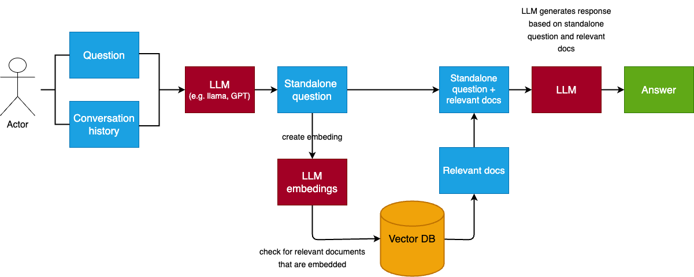
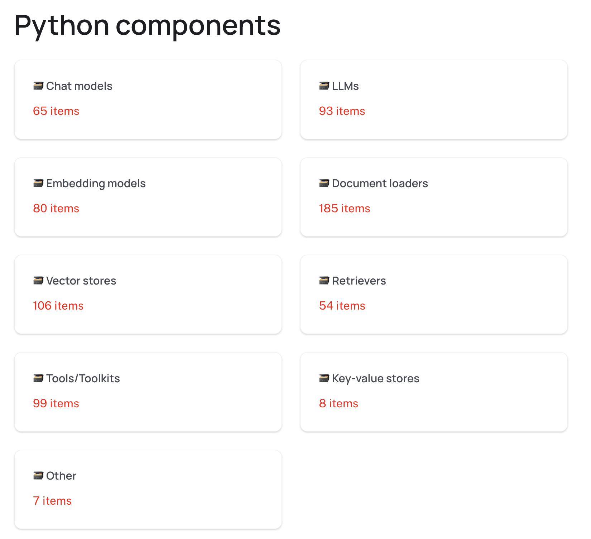
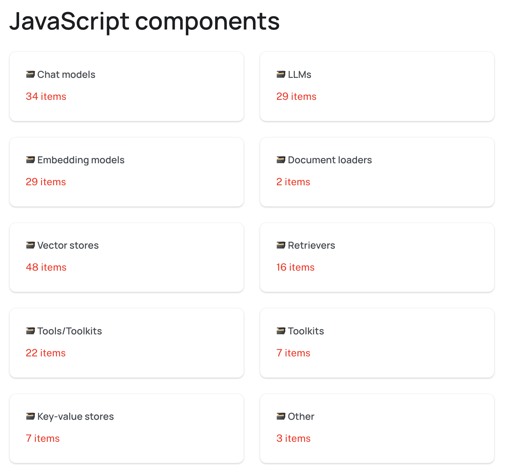

<!DOCTYPE html>
<html lang="en">
  <head>
    <meta charset="utf-8" />
    <meta name="viewport" content="width=device-width, initial-scale=1.0, maximum-scale=1.0, user-scalable=no" />

    <title></title>
    <link rel="stylesheet" href="dist/reveal.css" />
    <link rel="stylesheet" href="dist/theme/serif.css" id="theme" />
    <link rel="stylesheet" href="plugin/highlight/monokai.css" />
	<link rel="stylesheet" href="css/layout.css" />
	<link rel="stylesheet" href="plugin/customcontrols/style.css">
	<link rel="stylesheet" href="plugin/chalkboard/style.css">

	<link rel="stylesheet" href="plugin/reveal-pointer/pointer.css" />


    <script defer src="dist/fontawesome/all.min.js"></script>

	<script type="text/javascript">
		var forgetPop = true;
		function onPopState(event) {
			if(forgetPop){
				forgetPop = false;
			} else {
				parent.postMessage(event.target.location.href, "app://obsidian.md");
			}
        }
		window.onpopstate = onPopState;
		window.onmessage = event => {
			if(event.data == "reload"){
				window.document.location.reload();
			}
			forgetPop = true;
		}

		function fitElements(){
			const itemsToFit = document.getElementsByClassName('fitText');
			for (const item in itemsToFit) {
				if (Object.hasOwnProperty.call(itemsToFit, item)) {
					var element = itemsToFit[item];
					fitElement(element,1, 1000);
					element.classList.remove('fitText');
				}
			}
		}

		function fitElement(element, start, end){

			let size = (end + start) / 2;
			element.style.fontSize = `${size}px`;

			if(Math.abs(start - end) < 1){
				while(element.scrollHeight > element.offsetHeight){
					size--;
					element.style.fontSize = `${size}px`;
				}
				return;
			}

			if(element.scrollHeight > element.offsetHeight){
				fitElement(element, start, size);
			} else {
				fitElement(element, size, end);
			}		
		}


		document.onreadystatechange = () => {
			fitElements();
			if (document.readyState === 'complete') {
				if (window.location.href.indexOf("?export") != -1){
					parent.postMessage(event.target.location.href, "app://obsidian.md");
				}
				if (window.location.href.indexOf("print-pdf") != -1){
					let stateCheck = setInterval(() => {
						clearInterval(stateCheck);
						window.print();
					}, 250);
				}
			}
	};


        </script>
  </head>
  <body>
    <div class="reveal">
      <div class="slides"><section  data-markdown><script type="text/template"><!-- .slide: class="drop" -->
<div class="" style="position: absolute; left: 0px; top: 0px; height: 900px; width: 1440px; min-height: 900px; display: flex; flex-direction: column; align-items: center; justify-content: center" absolute="true">

## R&D: AI Integration into JavaScript Projects

- Investigate Frameworks, SDKs, Libraries for AI integration (AI Agents creation and usage) in JavaScript projects (Example for .NET: Semantic Kernel)
- &shy;<!-- .element: class="fragment" data-fragment-index="1" -->Select the most promising one(s).
- &shy;<!-- .element: class="fragment" data-fragment-index="2" -->Create PoC illustrating different aspects of selected SDK usage in different scenarios.
- &shy;<!-- .element: class="fragment" data-fragment-index="3" -->**Final goal: be ready to train JavaScript developers in AI (Agents) Integration area**
</div></script></section><section  data-markdown><script type="text/template"><!-- .slide: class="drop" -->
<div class="" style="position: absolute; left: 0px; top: 0px; height: 900px; width: 1440px; min-height: 900px; display: flex; flex-direction: column; align-items: center; justify-content: center" absolute="true">

## Questions we addressed

- ✅ What are the most popular tools and how mature they are?
- &shy;<!-- .element: class="fragment" data-fragment-index="1" -->✅ How to integrate AI solutions on existing projects?
- &shy;<!-- .element: class="fragment" data-fragment-index="2" -->✅ Which competency level is required to start building AI agents?
- &shy;<!-- .element: class="fragment" data-fragment-index="3" -->❌ Developer's responsibility vs Data Engineer's responsibility? 
- &shy;<!-- .element: class="fragment" data-fragment-index="4" -->❌ Do we need to struggle with Javascript if we can build it on Python?
</div></script></section><section ><section data-markdown><script type="text/template"><!-- .slide: class="drop" -->
<div class="" style="position: absolute; left: 0px; top: 0px; height: 900px; width: 1440px; min-height: 900px; display: flex; flex-direction: column; align-items: center; justify-content: center" absolute="true">

## What are the most popular tools and how mature they are?


</div></script></section><section data-markdown><script type="text/template"><!-- .slide: class="drop" -->
<div class="" style="position: absolute; left: 0px; top: 0px; height: 900px; width: 1440px; min-height: 900px; display: flex; flex-direction: column; align-items: center; justify-content: center" absolute="true">

### LangChain ecosystem 

<split left="2" right="1">



- [LangChain](https://www.langchain.com/)
- [LangGraph](https://langchain-ai.github.io/langgraph/)
- [LangSmith](https://www.langchain.com/langsmith)
</split>
</div></script></section><section data-markdown><script type="text/template"><!-- .slide: class="drop" -->
<div class="" style="position: absolute; left: 0px; top: 0px; height: 900px; width: 1440px; min-height: 900px; display: flex; flex-direction: column; align-items: center; justify-content: center" absolute="true">

### LangChain alternatives

<div class="block">




</div>


<div class="block">

- [LlamaIndex](https://www.llamaindex.ai) [JS] 
- [haystack](https://haystack.deepset.ai/) [Python]
</div>
</div></script></section><section data-markdown><script type="text/template"><!-- .slide: class="drop" -->
<div class="" style="position: absolute; left: 0px; top: 0px; height: 900px; width: 1440px; min-height: 900px; display: flex; flex-direction: column; align-items: center; justify-content: center" absolute="true">

### Popularity comparison

[Link to comparison](https://npmtrends.com/@langchain/community-vs-LlamaindexTS-vs-langchain-vs-llamaindex)


</div></script></section><section data-markdown><script type="text/template"><!-- .slide: class="drop" -->
<div class="" style="position: absolute; left: 0px; top: 0px; height: 900px; width: 1440px; min-height: 900px; display: flex; flex-direction: column; align-items: center; justify-content: center" absolute="true">

### Low-code & no-code platforms

<split>
 <div class="block">




</div>


</split>

<split>
 <div class="block">

- [flowise](https://flowiseai.com/) [JS]
- [langflow](https://www.langflow.org/) [Python]
- [botpress](https://botpress.com/) [JS]
</div>


</split>
</div></script></section><section data-markdown><script type="text/template"><!-- .slide: class="drop" -->
<div class="" style="position: absolute; left: 0px; top: 0px; height: 900px; width: 1440px; min-height: 900px; display: flex; flex-direction: column; align-items: center; justify-content: center" absolute="true">

### Popularity of low-code & no-code platforms

[bootpress vs flowise](https://npmtrends.com/@botpress/cli-vs-flowise)


</div></script></section></section><section ><section data-markdown><script type="text/template"><!-- .slide: class="drop" -->
<div class="" style="position: absolute; left: 0px; top: 0px; height: 900px; width: 1440px; min-height: 900px; display: flex; flex-direction: column; align-items: center; justify-content: center" absolute="true">

## Let's show our POC

<https://ai.bootcamp.place></https>


</div></script></section><section data-markdown><script type="text/template"><!-- .slide: class="drop" -->
<div class="" style="position: absolute; left: 0px; top: 0px; height: 900px; width: 1440px; min-height: 900px; display: flex; flex-direction: column; align-items: center; justify-content: center" absolute="true">

### POC architecture


[GitHub source](https://github.com/dosandk/rag-llms-investigation)
</div></script></section><section data-markdown><script type="text/template"><!-- .slide: class="drop" -->
<div class="" style="position: absolute; left: 0px; top: 0px; height: 900px; width: 1440px; min-height: 900px; display: flex; flex-direction: column; align-items: center; justify-content: center" absolute="true">

### LangChain chatbot architecture


</div></script></section><section data-markdown><script type="text/template"><!-- .slide: class="drop" -->
<div class="" style="position: absolute; left: 0px; top: 0px; height: 900px; width: 1440px; min-height: 900px; display: flex; flex-direction: column; align-items: center; justify-content: center" absolute="true">

### Retrieval process


[Source](https://python.langchain.com/v0.1/docs/modules/data_connection/)
</div></script></section></section><section  data-markdown><script type="text/template"><!-- .slide: class="drop" -->
<div class="" style="position: absolute; left: 0px; top: 0px; height: 900px; width: 1440px; min-height: 900px; display: flex; flex-direction: column; align-items: center; justify-content: center" absolute="true">

## Which competency level is required to start building AI agents?

<split left="1" right="1">
<div class="block">


</div>


<div class="block">

- &shy;<!-- .element: class="fragment" data-fragment-index="1" -->Full-stack developer
- &shy;<!-- .element: class="fragment" data-fragment-index="2" -->Middle competent (L2) 
- &shy;<!-- .element: class="fragment" data-fragment-index="3" -->With understanding of LLMs concepts and principles of building AI chains/agents
- &shy;<!-- .element: class="fragment" data-fragment-index="4" -->Who can leverage a full cycle of development
</div>


</split>
</div></script></section><section ><section data-markdown><script type="text/template"><!-- .slide: class="drop" -->
<div class="" style="position: absolute; left: 0px; top: 0px; height: 900px; width: 1440px; min-height: 900px; display: flex; flex-direction: column; align-items: center; justify-content: center" absolute="true">

## Do we need to struggle with JavaScript if we can build it on Python?

- [**python**.langchain.com](https://python.langchain.com)
- [**js**.langchain.com](https://js.langchain.com)
</div></script></section><section data-markdown><script type="text/template"><!-- .slide: class="drop" -->
<div class="" style="position: absolute; left: 0px; top: 0px; height: 900px; width: 1440px; min-height: 900px; display: flex; flex-direction: column; align-items: center; justify-content: center" absolute="true">

### JS LangChain vs Python LangChain

<split>



<div class="block">

|
</div>




</split>
</div></script></section></section><section  data-markdown><script type="text/template"><!-- .slide: class="drop" -->
<div class="" style="position: absolute; left: 0px; top: 0px; height: 900px; width: 1440px; min-height: 900px; display: flex; flex-direction: column; align-items: center; justify-content: center" absolute="true">

## Flowise

Demo time 🕐
</div></script></section><section  data-markdown><script type="text/template"><!-- .slide: class="drop" -->
<div class="" style="position: absolute; left: 0px; top: 0px; height: 900px; width: 1440px; min-height: 900px; display: flex; flex-direction: column; align-items: center; justify-content: center" absolute="true">

## Q&A
</div></script></section></div>
    </div>

    <script src="dist/reveal.js"></script>

    <script src="plugin/markdown/markdown.js"></script>
    <script src="plugin/highlight/highlight.js"></script>
    <script src="plugin/zoom/zoom.js"></script>
    <script src="plugin/notes/notes.js"></script>
    <script src="plugin/math/math.js"></script>
	<script src="plugin/mermaid/mermaid.js"></script>
	<script src="plugin/chart/chart.min.js"></script>
	<script src="plugin/chart/plugin.js"></script>
	<script src="plugin/menu/menu.js"></script>
	<script src="plugin/customcontrols/plugin.js"></script>
	<script src="plugin/chalkboard/plugin.js"></script>
	<script src="plugin/reveal-pointer/pointer.js"></script>
	<script src="plugin/elapsed-time-bar/elapsed-time-bar.js"></script>

    <script>
      function extend() {
        var target = {};
        for (var i = 0; i < arguments.length; i++) {
          var source = arguments[i];
          for (var key in source) {
            if (source.hasOwnProperty(key)) {
              target[key] = source[key];
            }
          }
        }
        return target;
      }

	  function isLight(color) {
		let hex = color.replace('#', '');

		// convert #fff => #ffffff
		if(hex.length == 3){
			hex = `${hex[0]}${hex[0]}${hex[1]}${hex[1]}${hex[2]}${hex[2]}`;
		}

		const c_r = parseInt(hex.substr(0, 2), 16);
		const c_g = parseInt(hex.substr(2, 2), 16);
		const c_b = parseInt(hex.substr(4, 2), 16);
		const brightness = ((c_r * 299) + (c_g * 587) + (c_b * 114)) / 1000;
		return brightness > 155;
	}

	var bgColor = getComputedStyle(document.documentElement).getPropertyValue('--r-background-color').trim();
	var isLight = isLight(bgColor);

	if(isLight){
		document.body.classList.add('has-light-background');
	} else {
		document.body.classList.add('has-dark-background');
	}

      // default options to init reveal.js
      var defaultOptions = {
        controls: true,
        progress: true,
        history: true,
        center: true,
        transition: 'default', // none/fade/slide/convex/concave/zoom
        plugins: [
          RevealMarkdown,
          RevealHighlight,
          RevealZoom,
          RevealNotes,
          RevealMath.MathJax3,
		  RevealMermaid,
		  RevealChart,
		  RevealCustomControls,
		  RevealMenu,
	      RevealPointer,
		  RevealChalkboard, 
		  ElapsedTimeBar
        ],


    	allottedTime: 120 * 1000,

		mathjax3: {
			mathjax: 'plugin/math/mathjax/tex-mml-chtml.js',
		},
		markdown: {
		  gfm: true,
		  mangle: true,
		  pedantic: false,
		  smartLists: false,
		  smartypants: false,
		},

		mermaid: {
			theme: isLight ? 'default' : 'dark',
		},

		customcontrols: {
			controls: [
				{ icon: '<i class="fa fa-pen-square"></i>',
				title: 'Toggle chalkboard (B)',
				action: 'RevealChalkboard.toggleChalkboard();'
				},
				{ icon: '<i class="fa fa-pen"></i>',
				title: 'Toggle notes canvas (C)',
				action: 'RevealChalkboard.toggleNotesCanvas();'
				},
			]
		},
		menu: {
			loadIcons: false
		}
      };

      // options from URL query string
      var queryOptions = Reveal().getQueryHash() || {};

      var options = extend(defaultOptions, {"width":1440,"height":900,"margin":0,"controls":true,"progress":true,"slideNumber":true,"transition":"slide","transitionSpeed":"default"}, queryOptions);
    </script>

    <script>
      Reveal.initialize(options);
    </script>
  </body>

  <!-- created with Advanced Slides -->
</html>
